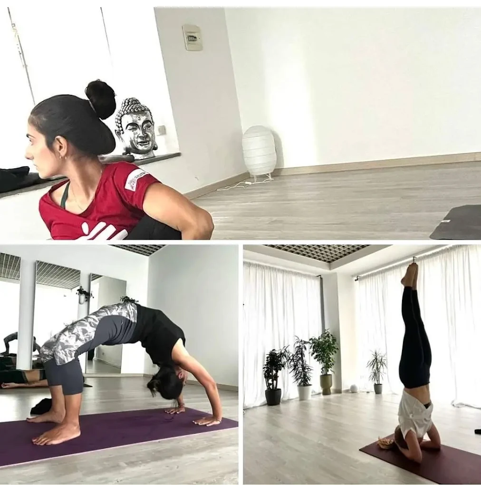

Respiro e mobilità
Movimenti semplici preparano articolazioni e attenzione.

Una pratica delicata che adatta le posizioni dello yoga tradizionale usando la sedia come supporto.
Prova una lezioneLa sedia permette di esplorare posizioni, allungamenti e movimenti con maggiore stabilità. La pratica è lenta, progressiva e attenta alle possibilità della persona.
Si lavora sulla mobilità, sull’equilibrio e sulla postura, con momenti dedicati al respiro e alla distensione.

Ogni movimento può trovare il suo spazio.
La sedia non è un limite: è un appoggio che rende la pratica più stabile, leggibile e personale.
Movimenti semplici preparano articolazioni e attenzione.
La sedia accompagna esercizi seduti e in piedi, secondo le possibilità individuali.
La lezione termina con un tempo calmo di ascolto e distensione.
È pensato per senior, persone con mobilità ridotta e chiunque desideri una pratica più dolce e sostenuta. Per esigenze specifiche è utile confrontarsi prima con l’insegnante.

Con quindici anni di pratica e una formazione Yoga e Medicina® 250 Plus Advanced, Simona accompagna le persone con attenzione, accoglienza e rispetto dei tempi individuali.
Scrivici per sapere se questa pratica è adatta a te.
Scrivici su WhatsApp